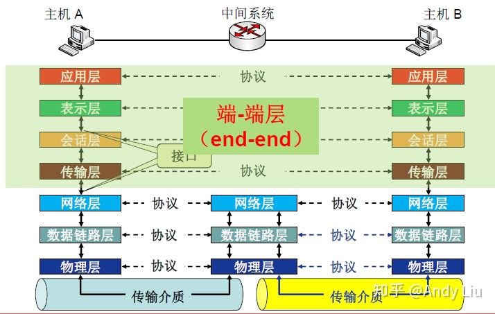
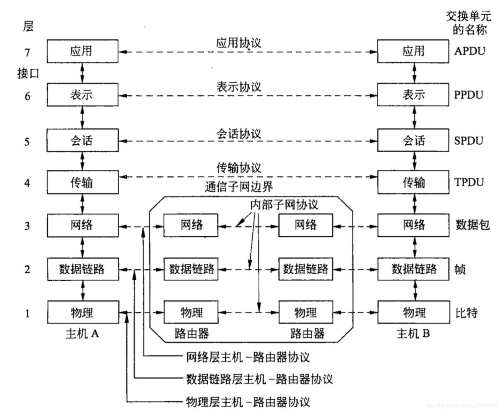

神经系统的工作方式
1.计算机网络的分类
按地理范围分：
(1)局域网(LAN) ，主要特点：私人服务、分布范围小、结构简单/布线容易、网络速度较快、误码率低。
(2)城域网(MAN)，通常是10~100公里内提供服务，一般用于提供公共服务，如城市银行系统、城市消防系统、城市邮政系统、城市有线电视/广播网络等。
(3)广域网(WAN)，基本特性：覆盖范围广、构建成本高、网络结构和类型复杂、传输速率低、误码率高。
按网络管理模式分:
(1)对等网(PTP)，即网络中各成员计算机的地位都是平等的，没有管理与被管理之分。主要特性：配置简单、统一配置和管理困难、安全性差、管理成本高、性能差。
(2)C/S网，主要优点：集中管理和配置容易、安全性高、性能好。
按传输方式分:
(1)点对点传输网络采用的协议都是基于点对点通信协议的，如SLIP(串行线路Internet协议)、PPP(点对点协议)、PPPOE(基于以太网的点对点协议)、PPTP(点对点隧道协议)等。
(2)广播式传输网络是一种可以仅使用由网络上的所有节点共享的公共信道进行广播传输的计算机网络，是一种一点对多点的网络结构。
2.OSI 七层模型
OSI (Open System Interconnection),由 ISO (International Standards Organization) 在 1983 年提出。
 七层模型:
7-应用层:主要为各种各样的网络应用提供网络服务，如Email、FTP、微信等。
6-表示层:将信息表示为一定形式和格式的数据流，完成压缩解压缩、加密解密等任务。
5-会话层:负责通信主机间会话的建立、管理和拆除，协调通信双方的会话。
4-传输层:参考模型上的核心层之一，负责通信主机间端到端的数据传递。(核心功能)对于 TCP，该层还负责提供可靠传输、差错恢复、拥塞控制等额外的功能。
3-网络层:核心层之一，两大主要功能：地址、最优路径。负责把每一个分组从源机一路送达到目的机。
地址，即为通信主机提供标识，在网络层上用 IP 地址进行标识。
最优路径，在路由和寻径时，每一个中间设备都会为到达的分组找到一个最优的路径并送出。
2-数据链路层:该层主要提供介质访问服务。通过物理地址来标识通信主机，提供可靠的帧传递并做差错控制和流量控制。
1-物理层:该层提供透明的比特流传输，可以是光、电、无线信号。该层只关心比特流的传输，而忽略比特流里面的具体内容。
七层模型的特点：每一层都利用它下层的服务，为它的上层提供服务。除了第 1 层和第 7 层。